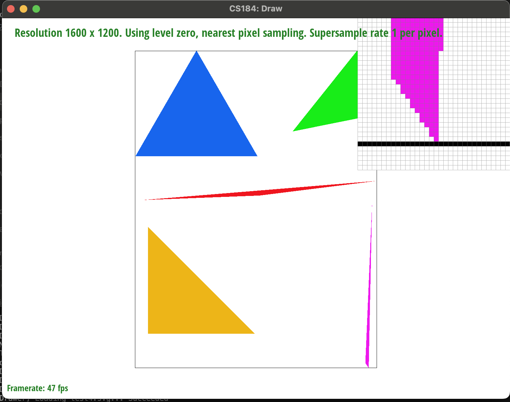
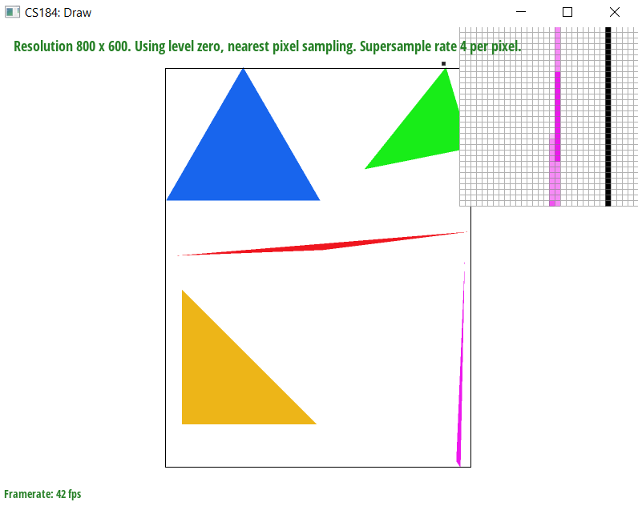
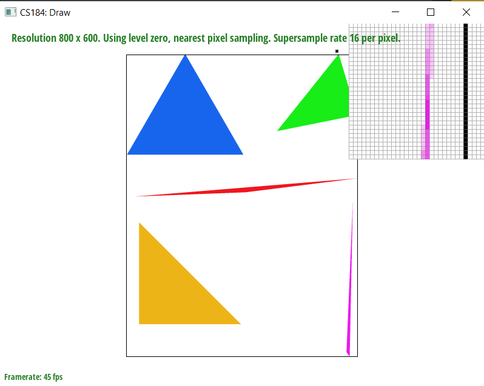
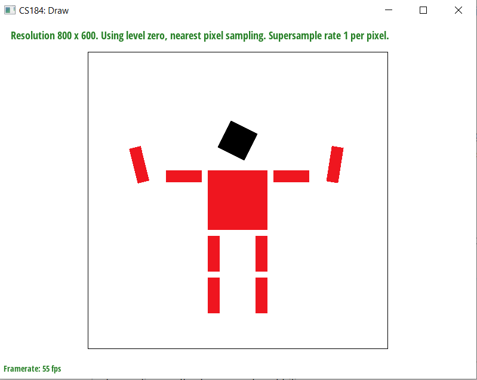
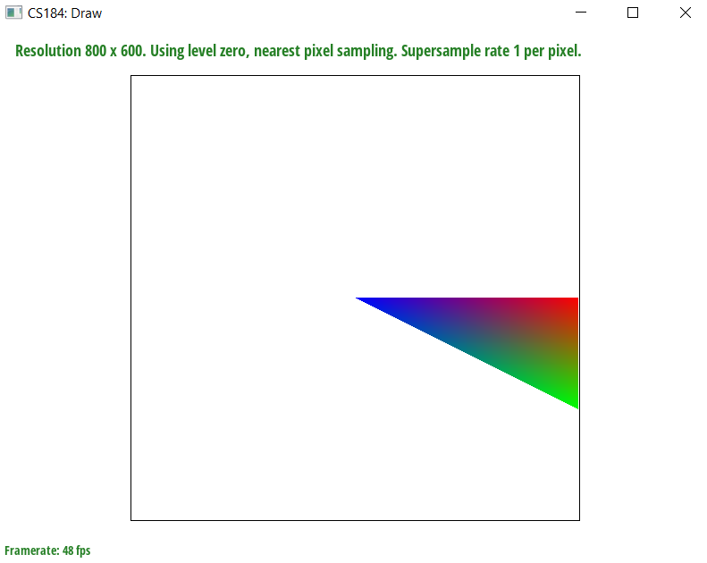
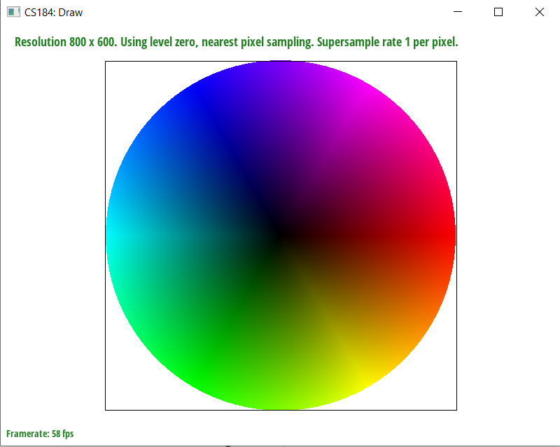
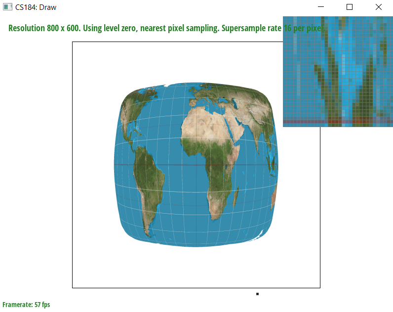
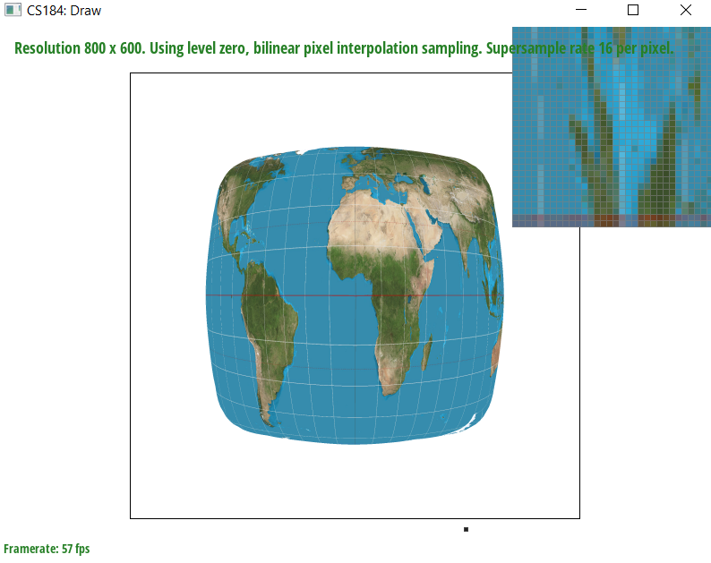
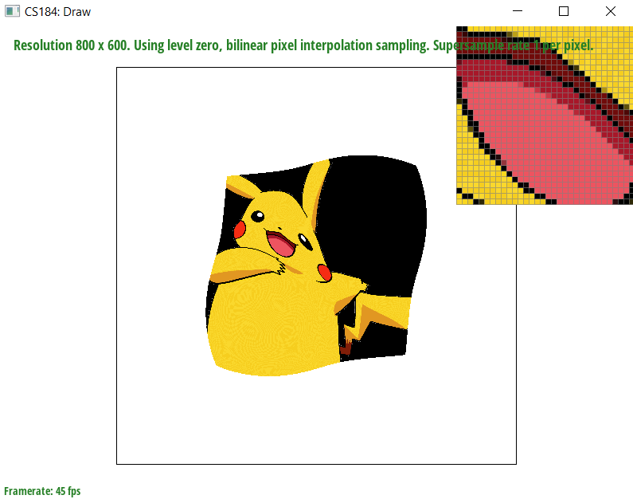
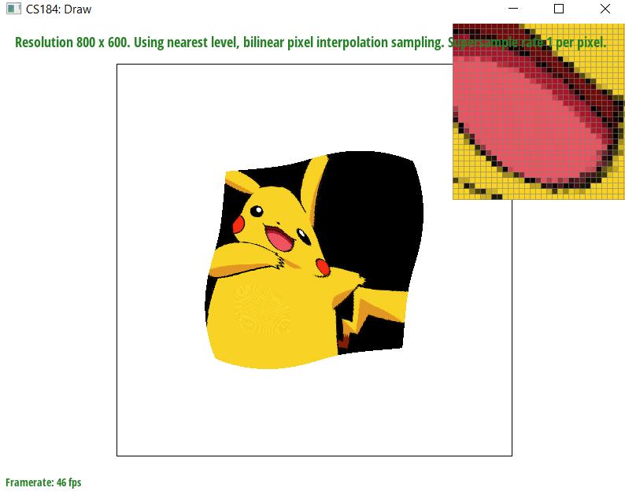

In this homework, we implemented a rasterization pipeline through gradual steps and with the
capability of supporting many different For example, given a triangle based
on its vertices, we are able to fill in a correct color. We are also able to support antialiasing methods like supersampling
to relieve image artifacts like jaggedness on diagonals. We also supported sampling from texture maps and implemented different
sampling methods at the pixel level like nearest and bilinear sampling, as well as added support for varying sampling rates.
We also implemented level sampling with mipmaps in order for texture mapping.
Along the way, we were able to see all of these implemented features applied to a set of varying images. Some of these features
made significant changes to images where adjacent pixels had varying colors (like a colorwheel or colorful parrot), or when
surrounding edges were more jagged (like edges of a continent on a map). We were also able to create our own
SVG files and apply these features to custom images.
In the end, we strengthened our skills in understanding how computers render images, and the pros and drawbacks
of different techniques on rendering speed, memory usage, and antialiasing; as a whole, we gained better intuition
into why techniques taught in lecture, like supersampling and interpolation across triangles, are useful in computer
graphics.
We thought that interpolating colors in triangles using barycentric coordinates in order to reduce high contrast
colors was super insightful, and we were able to see the effects on a custom-made triangle, where the vertices where
red, green, and blue. Overall, being able to apply the formulas taught in lecture into our own rasterization pipeline
made for a very interesting project.
We are rasterizing triangles by sampling pixel centers that are contained inside of the edges of the triangle, which we check with a helper function, contained_in_triangle. Then, we iterate over every single pixel (double for loop for each x in the width and y in the height) and checking this condition. If the pixel center is contained within the triangle, then we sample that color and include it into our buffer. Otherwise, we move on.
This algorithm is no worse than one that checks each sample within the bounding box of the triangle because we are iterating over each pixel within the bounding box, and checking if this pixel is within the triangle. We are iterating over width * height number of pixels, which is no less than each sample within the bounding box.

In the supersampling algorithm, our frame gets scaled by up sqrt(sample rate) in both dimensions. As a result, we upscale the vertices of the triangles passed in. With these new larger triangles, we perform the same line test as in the previous part. When we resolve the frame buffer, we iterate throuhg the sample buffer in sqrt(sample rate) * sqrt(sample rate) squares and collapse each into a single pixel: we do this by collapsing by averaging the color values across the square.
Supersampling is useful because it allows you to sample at a higher resoltuion and average the values in your buffer to encapsulate more of what's going on within a single pixel. This creates a bluffering effect that reduces the jagged edges that we get because of aliasing.
In the rasterization pipeline, we upscale our triangles by the square root of the samle rate. Then, when resolving to the frame buffer, we average each sub grid so that the resolution matches our device specification.
  We are seeing these results because of the change in sample rate. For the low sample rate(1 sample per pixel), the color of the sample is determined by the color of one pixel. This is why we see the most dramatic color changes from pink to white. For the medium sample rate (4 samples per pixel), we are taking the average of the variations in color for that pixel, which results in a smoother image transition from pink to lighter pink to white. The highest sample rate (16 samples per pixel) has the most refined image and averaged colors, leading to the most reduced aliasing.

We tried making the cubeman wave with both hands, as well as changed the head of cubeman to be black.
Barycentric coordinates give us a way to position a point's location within a triangle in relation to the triangle's vertices. Each barycentric coordinate represents one vertex of a triangle, with the numbers weighted by the proportion of each vertex that is contributing to the triangle. As we can see in the picture below, different points in the triangle are colored based on their location in relation to the 3 vertices. Points closer to the left are more blue, points closer to the top right are more red, and points closer to the bottom right are more green. Points in between are a mix of these colors, with heavier weight to points closer to the corresonding vertex color. 

Pixel sampling is figuring out what color a pixel should be in an image based on looking at its location. We did it in two ways to implement texture mapping: nearest sampling and bilinear sampling. In nearest sampling, the nearest pixel was directly sampled to assign color for the pixel location. In bilinear sampling, we interpolate between the four nearest pixels where the interpolation is based on the distances between the target pixel and the 4 neighboring pixels.
Bilinear sampling often outperforms nearest sampling in scenarios where we want smooth gradient transitions. I looked for a location where there were multiple colors adjacent to one another, for example from blue to light blue to dark green to green. These are the pictures:
Nearest sampling (1 sample per pixel)
Nearest sampling (16 samples per pixel) 
Bilinear sampling (1 sample per pixel)
Bilinear sampling (16 samples per pixel) 
Bilinear sampling often outperforms nearest sampling in scenarios where we want smooth gradient transitions. We see the largest difference between the two methods in zooming in on locations where 1 pixel is a drastically different color from the surrounding pixels. For example, in the nearest sampling rate 1 per pixel, there is locations with a single black pixel among blue and a single yellow pixel among green. We won't see this in bilinear sampling rate 1 per pixel , where that pixel is averaged (more blue or more green looking). Rather than being a black pixel among blue pixels, it's a lighter grey pixel that has weight from the blue contributing to it. In general, the bilinear sampling has smoother color gradient transitions than nearest pixel sampling.
Level sampling helps us determine the color that should be rendered at a specific location by sampling locations in a grid pattern, or mipmap. A higher level refers to a lower resolution in the texture space, leading to a more sparse mipmap; A lower level refers to a higher resolution in the texture space, leading to a more dense mipmap. In order to implement "level sampling" texture mapping, we reused our logic from "pixel sampling" for texture mapping, where we defaulted to a Vector2D(0, 0), sampling from the mipmap at level 0. First, we modified the SampleParameters to change p_dx_uv and p_dy_uv from (0, 0) to the UV barycentric coordinates of u and v. Then, we filled in the Texture::get_level(sp) function to calculate the correct level value based on the formula in Lecture 5 slides where we calculate the maximum distance between a point and its 2 adjacent neighbors. Finally, we created two helper functions to cover the case where both pixel sampling and level sampling were linear (trilinear sampling), where the logic was similar to bilinear sampling, but we took a weighted average of the adjacent neighboring colors; and the case where pixel sampling was nearest and level sampling was linear, where we took the weighted average of nearest sampling the adjacent neighbors.
Modifying level sampling: if we increase the level we sample from, the rendering speed is slower because we have to sample from two different levels and interpolate them together. Modifying level sampling alone doesn't greatly affect memory usage. As we go from level sampling L_ZERO to L_LINEAR, we have more antialiasing power. Modifying pixel sampling: bilinear pixel sampling is slightly slower than nearest pixel sampling because we have to search the 4 nearest neigbors, rather than just the single nearest one. Nearest pixel sampling has straightfoward memory usage, as each pixel contributes to 1 color value in the final image; bilinear pixel sampling is slightly more complicated (not a huge difference) because interpolation requires multiple pixels, but this can be implemented with temporary storage for intermediate results during interpolation, so we are not using significantly more memory. Finally, bilinear pixel sampling has higher antialiasing power and smoothing transition power, as its interpolating color values from adjacent pixels, whereas nearest pixel sampling has low antialiasing power, so it tends to produce more noticeable aliasing artifacts.
L_ZERO and P_NEAREST:
L_ZERO and P_LINEAR: 
L_NEAREST and P_NEAREST:
L_NEAREST and P_LINEAR: 